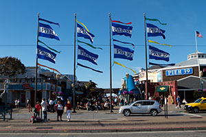

Entertainment of San Francisco
San Francisco has a large array of Entertainment, from a nearby amusement park, to museums, parks, zoos, comedy clubs, and a night life. There is bound to be plenty to do for any taste, and things for singles, and family's.
Pier 39
 While Pier 39 is primarily a tourist area, it does have a number of shops, a merry go round, various shows and musical acts throughout the evening, and a wide assortment of restaurants to dine in.
I tend to visit Pier 39 to just look around and do some shopping. Many times I use it as a starting point for going to various locations as so much of the transportation options start and end by or near the Pier. It is walking distance to Coit Tower, the Ferry Building and many other destinations along Fisherman's Wharf and the Embarcadero.
The place I tend to visit on the Pier are mainly restaurants however. I do get souvenirs from the various shops as well, and have bought some 3D wooden models of the Golden Gate Bridge and the Cable Cars here. Both of them have held up well over the years and look nice on my desk, you will just need to take the time to assembly them first however.